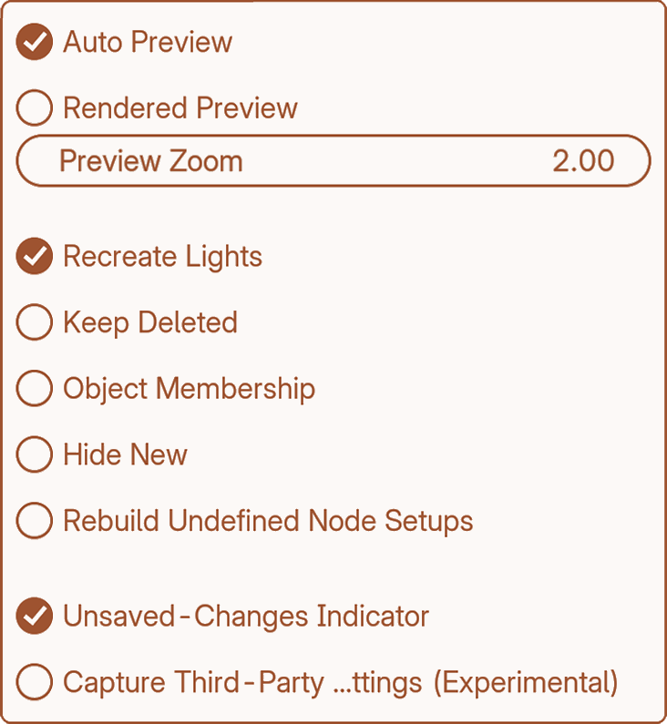

Capture Settings
1.0.4Capture Settings
The gear at the top of the panel opens the restore and capture options (Recreate Lights, Hide New, Keep Deleted, and more).
Thumbnails
Auto Preview — Takes a viewport thumbnail for every capture.
Rendered Preview — Renders a 512×512 preview with your engine in the background.
Preview Zoom — How tightly the thumbnail crops. 1.0 is the whole viewport.
Restore
Recreate Lights — Brings back lights deleted since the capture.
Keep Deleted — Brings back any deleted object the capture still holds.
Object Membership — Also restores which collection each object belongs to, moving objects to match.
Hide New — Objects created since the capture are hidden in a “KeepIt Hidden” collection instead of deleted.
Rebuild Undefined Node Setups — For nodes Blender can’t recreate, usually from a missing add-on. Off, they’re left alone and restore stays fast. On, everything around them is rebuilt — slower.
Other
Unsaved-Changes Indicator — Warns when the scene has drifted from what was last applied.
Capture Third-Party Engine Settings (experimental) — Captures settings from engines like V-Ray and Octane.
